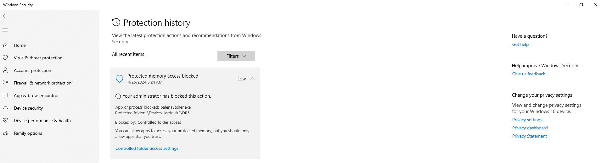
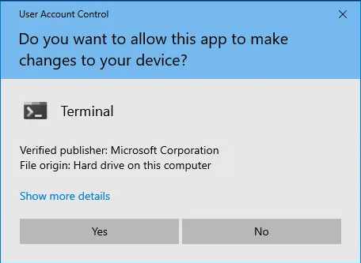
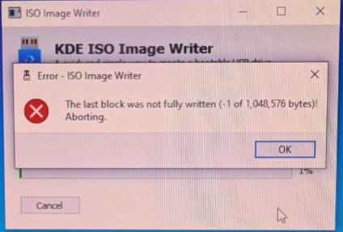
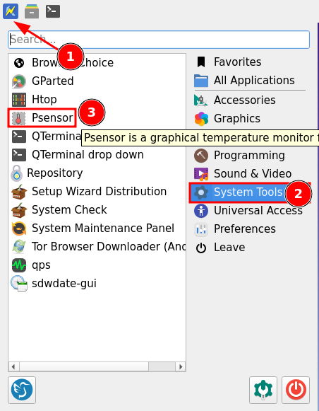
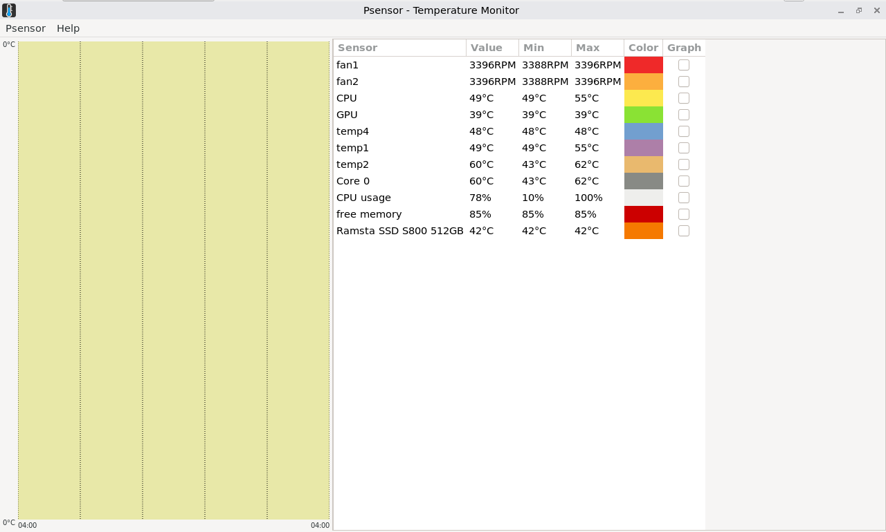

We believe security software like Kicksecure needs to remain Open Source and independent. Would you help sustain and grow the project? Learn more about our 14 year success story and maybe DONATE!
TestDocumentationpanic-on-oopsPrevious page: TestIndex page: DocumentationNext page: panic-on-oopsTroubleshooting
The wiki page covers troubleshooting tips for installation issues, general issues, network issues, and hardware problems.
ISO
ISO to USB Image Writer Tools
functional, bootable image:
- Flashing using a Qubes Kicksecure VM with hide hardware information
enabled using
cp. - Flashing using a Qubes Kicksecure VM using KDE ISO Image Writer from Flathub.
- Flashing using a Debian VM using the balenaEtcher AppImage.
- Flashing using a Windows OS with the balenaEtcher installer version.
- Flashing using a Windows OS with UNetbootin (portable).
broken:
- Flashing using a Qubes Kicksecure VM with hide hardware information enabled using balenaEtcher, which shows an error message due to hide hardware information.
Tips
- Practice on a separate notebook.
- Use a VM to flash for security against data loss.
Live ISO Known Issues
balenaEtcher
Privacy issue:
User report balenaEtcher shares sensitive information to the Balena company and Download Security wiki chapter balanaEtcher.
Technical issue:
Platform specific.
- A) Non-Windows host operating systems such as macOS or Linux: No special notice.
- B) Windows: See below.
If you have Controlled Folder Access enabled, you need to allow changes by Etcher:
Figure: Windows Protection History

If you have User Account Control enabled, allow Etcher to make changes to your device by pressing "Yes" when a popup similar to the following appears:
Figure: Windows User Account Control

KDE ISO Image Writer
The last block was not fully written (-1 of 1,048,576 bytes)!KDE ISO Image Writer Error Message

In this case,
- A) try to unmount the USB device first or
- B) use a different ISO Image Writer tool.
DVD Support

Untested. Should work in theory. Tested inside QEMU and VirtualBox with an emulated CD-ROM drive. So chances are good that it will work with a real DVD drive as well.
Dual Boot
It is recommended to physically disconnect any other physical disks while installing Kicksecure (or any other operating system) to mitigate the risk of the installer overwriting the wrong drive due to user error or software bugs.
Fastboot
Fastboot is a BIOS setting which skips attempting to boot from USB on some computers. In this case, the user must disable Fastboot in order to be able to boot from USB.
Encryption Settings
- Default Encryption Settings: Which encryption settings will be used? See: cryptsetup luksFormat --help
- Authority: Where are the default encryption settings coming from? From distribution defaults. In this case, from Debian because Kicksecure is based on Debian.
- User customization: No, unfortunately not possible. Full disk encryption settings are not configurable in calamares. calamares upstream bug report (closed, but not implemented, "patches welcome")
- Alternatives: Distribution Morphing: morphing Debian into Kicksecure
- Forum discussion: ISO - cryptsetup Full Disk Encryption (FDE) - set more secure default encryption settings
Minor Issues
This might be an issue when installing additional packages while running the live ISO. This will not be an issue after installing to hard drive.
Failed to mount sysroot.mount - /sysroot.
The message Failed to mount sysroot.mount - /sysroot.
during the boot ISO process is only a cosmetic issue. It can be safely
ignored.
This issue will be fixed in Kicksecure 18 and above (Debian trixie based).
Details here: https://forums.kicksecure.com/t/iso-error-message-during-boot-mount-sysroot-special-device-liveos-rootfs-does-not-exist/418
update-grub
Note: There is most likely no need to run the following command. This is only documentation "what if". If running the following command,
sudo update-grubthen the following error message would be shown.
/usr/sbin/grub-probe: error: failed to get canonical path of `LiveOS_rootfs'.
zsh: exit 1 sudo update-grubPlease report a bug if this breaks something for you. Adding a workaround for this would not be difficult.
This command is also unrelated to fixing installation issues. Users
executing update-grub from an ISO is not very useful
because an ISO is a read-only filesystem. Running
update-grub can be useful during the installation from ISO
to hard drive, but this is something that needs to happen inside a
chroot, which is a specifically prepared environment. This
is very difficult for most users and unnecessary because this is part of
the tasks of the installer.
Calamares ISO Installer
Calamares ISO Installer - Known Issues
Calamares ISO Installer - Logs Access
1 Boot the ISO.
2 Select sysmaint session in the boot menu.
3 Wait for the system to boot.
4
Click Install System.
5 You will briefly see a black terminal window. Then the Calamares window will start.
6 The absence of a taskbar might be confusing.
- A taskbar will be introduced in the next release.
- The terminal window will keep running in the background.
7 Install the system.
8
In the last Calamares screen, make sure to uncheck
restart now.
9 Press done.
10 Calamares will close and the install-host terminal window will reappear.
11 To save the log:
Click Terminal -> Save Contents.
Connectivity Troubleshooting
ICMP Fix
 Note: Kicksecure firewall does not exist yet at time of writing.
Note: Kicksecure firewall does not exist yet at time of writing.
Therefore no such fix is required yet.
Qubes-specific Connectivity Issue
Complete the following steps:
- Shut down
kicksecure. - Change the
kicksecureNetVM setting fromsys-firewalltosys-net. - Restart
kicksecure.
This procedure might help, but should not be considered a final solution. [2]
Why can't I Ping the Kicksecure?
 Note: Kicksecure firewall does not exist yet at time of writing.
Note: Kicksecure firewall does not exist yet at time of writing.
The Kicksecure does not respond to ping or similar commands
because it is firewalled for security reasons; see
/usr/bin/kicksecure_firewall or refer to the Kicksecure source
code. In most cases it is unnecessary to ping the Kicksecure anyhow.
If you insist on pinging the Kicksecure or have a unique setup that
requires it, then this can be tested by clearing all firewall rules with
the
 Kicksecure/developer-meta-files
script. Alternatively, a script can be run to try and unload / remove every
iptables rule, or the Kicksecure firewall can be hacked to not load
at all. The latter method is only for experts and it is necessary to
comment out exit 0 at the beginning.
Kicksecure/developer-meta-files
script. Alternatively, a script can be run to try and unload / remove every
iptables rule, or the Kicksecure firewall can be hacked to not load
at all. The latter method is only for experts and it is necessary to
comment out exit 0 at the beginning.
General Troubleshooting
Introduction
Troubleshooting issues can be time intensive and success cannot be guaranteed. Some users expect Kicksecure to provide an easy experience. While the Kicksecure developers make every effort to meet user expectations, limited funding and human resources make meeting these expectations impossible.
Even though problems emerge when using Kicksecure, the cause is most often unrelated to Kicksecure code. For example, users often report the same Kicksecure release worked on different hardware and/or with a different host operating system. Most software such as the host operating system or the virtualizer is developed by independent entities; this is the norm in Linux distributions. See Linux User Experience versus Commercial Operating Systems to learn more about these relationships, as well as organizational and funding issues in the Open Source ecosystem.
Essential General Troubleshooting Steps
 The following recommended steps will fix many startup, freezing, or
other unusual issues in Kicksecure. Skip steps that are no longer
possible if a virtual machine is not bootable.
The following recommended steps will fix many startup, freezing, or
other unusual issues in Kicksecure. Skip steps that are no longer
possible if a virtual machine is not bootable.
1. "Forget" about Kicksecure for a moment and imagine you had never heard of the platform. Test your host computer first.
2. Exclude basic hardware issues.
3. Ensure the virtual machine (VM) images have been imported into a supported virtualizer listed on the Download page.
4. Debian (based) Linux host operating system users only: The following command should not show any errors. [3]
sudo dpkg-reconfigure -a
5. Debian (based) Linux host operating system users only: The following command should be silent and not show any errors or output at all. [3]
sudo dpkg --configure -a
6. Debian (based) Linux host operating system users only: Next attempt to retrieve all available updates.
sudo apt update
sudo apt full-upgrade
7. Check for possible Low RAM Issues.
- Free up Additional Memory Resources.
- Also refer to Advice for Systems with Low RAM.
8. Virtualizer-specific troubleshooting.
- VirtualBox Troubleshooting / [[VirtualBox/Troubleshooting#General VirtualBox Troubleshooting Steps|General VirtualBox Troubleshooting Steps
]]
9. Check if other VMs are functional, such as newly created ones or those from a different vendor.
- "Forget" about Kicksecure for a moment and imagine you had never heard of the platform. Test the virtualizer host software first.
- Try a VM other than Kicksecure such as Debian
trixie. - If the issue persists, this means the root issue is not caused by Kicksecure, see: unspecific to Kicksecure. In this case, attempt to resolve the issue as per Self Support First Policy.
10. Check System Logs.
- Sometimes crashing or freezing issues are easier to detect by Watching Systemd Journal Log of Current Boot.
- Sometimes it is necessary to Check Systemd Journal Log of Previous Boot.
11. If a graphical environment (where one can use a computer mouse) is unavailable after booting, utilize a virtual console to acquire system logs.
- Recovery, Virtual Consoles.
- Check system logs of the previous boot (step 10).
12. Use recovery mode to acquire system logs.
- Boot in recovery mode.
- Check system logs of previous boot (step 10).
13. Use a chroot to acquire system logs.
If a virtual console is inaccessible and recovery mode is also broken, try using a chroot for recovery.
Low RAM Issues
If insufficient RAM is available for Kicksecure VMs, they might become unusable. Low RAM issues in Kicksecure are commonly caused by:
- Unnecessary processes running and/or multi-tasking on the host OS.
- Multiple, open browser tabs.
- Unnecessary processes running in the Kicksecure VM.
- Allocating more RAM to the Kicksecure VM than is available; this prevents the VM from booting.
- Insufficient RAM allocated to the Kicksecure VM.
- Other non-Kicksecure VMs running in parallel.
Insufficient RAM can cause multiple issues, but the most common effects include:
- Slow or unresponsive applications.
- The VM, mouse and/or keyboard freeze.
- Scrolling causes window staggers or jumps.
- Issues become worse when additional browser tabs or processes are spawned.
- Overall performance is poor.
See also: Advice for Systems with Low RAM.
Free up Additional Memory Resources
If a VM needs additional memory, then free up resources and/or add more RAM to the VM:
- Terminate any non-essential processes on the host.
- Shut down any non-essential VM.
- Shut down and/or close non-essential processes and browser tabs in Kicksecure VM.
To add additional RAM to the Kicksecure VM, follow the platform-specific advice below.
KVM
1. Shutdown the virtual machine(s).
virsh -c qemu:///system shutdown <vm_name>
2. Increase the maximum memory.
virsh setmaxmem <vm_name> <memsize> --config
3. Set the actual memory.
virsh setmem <vm_name> <memsize> --config
4. Restart the virtual machine(s).
virsh -c qemu:///system start <vm_name>
Kicksecure-Qubes
Utilize Qube Manager:
* Qube Manager → VM_name →
Qubes settings →
Advanced → Max memory:
mem_size
VirtualBox
- To add RAM in VirtualBox the VM must first be powered down.
Virtual machine→Menu→Settings→AdjustMemory slider→Hit:OK
See also: VirtualBox/Troubleshooting.
Generic Bug Reproduction
TODO
related: Generic Bug Reproduction
System Logs
Check Systemd Journal Log of Current Boot
To inspect the systemd journal log of the current boot, run:
sudo journalctl -b
This command requires pressing arrow keys like ↑, ↓, ←, →, as well as
PgUp and PgDn for scrolling.
For convenient reading of the log (until the command is issued), the
log can be dumped to file. For example, the following command would
write the log to file ~/systemd-log.
sudo journalctl -b > ~/systemd-log
Use any available editor to read the log file, such as
mousepad.
mousepad ~/systemd-log
Watch Systemd Journal Log of Current Boot
It is possible to watch the systemd journal log as it is written.
sudo journalctl -b -f
Check Systemd Journal Log of Previous Boot
It is possible to inspect the systemd journal log of the previous boot.
sudo journalctl -b -1
This command requires pressing arrow keys like ↑, ↓, ←, →, as well as
PgUp and PgDn for scrolling.
For convenient reading of the log (until the command is issued), the
log can be dumped to file. For example, the following command would
write the log to file ~/systemd-log-previous.
sudo journalctl -b -1 > ~/systemd-log-previous
Use any available editor to read the log file, such as
mousepad.
mousepad ~/systemd-log-previous
View List of Systemd Journal Logs
sudo journalctl --list-boots
Daemon Log View
To view the log of a specific systemd unit, use the following syntax:
(Replace unit-name with the actual name of the systemd
unit.)
sudo journalctl -b --no-pager -u unit-name
Example:
sudo journalctl -b --no-pager -u sdwdate
Daemon Log Follow
To follow the log of a specific systemd unit, use the following syntax:
(Replace unit-name with the actual name of the systemd
unit.)
sudo journalctl -f -b --no-pager -u unit-name
Example:
sudo journalctl -f -b --no-pager -u sdwdate
Daemon Status
To view the status of a specific systemd unit, use the following syntax:
(Replace unit-name with the actual name of the systemd
unit.)
sudo systemctl status --no-pager unit-name
Example:
sudo systemctl status --no-pager sdwdate
Check Systemd Journal Log of Failed Boot
An alternative to recovery mode might be virtual consoles, since they are an easier and more lightweight solution. A virtual console login might still be possible when the graphical user interface no longer starts.
Prerequisite knowledge: Virtual Consoles. Try to log in to a virtual console in a functional VM as an exercise. If that works, try a virtual console login in the broken VM.
If a virtual console is unavailable:
- Boot into Recovery Mode
- Reboot into normal mode so a log for the failed boot will be written (if not previously enabled).
- Boot into recovery mode again.
- Check Systemd Journal Log of Previous Boot.
A dracut emergency shell may also be useful in case recovery mode is broken.
Slow Shutdown Issues
To help diagnose slow shutdown issues, enable the
check-user-slice-on-shutdown.service systemd unit.
[5]
sudo systemctl enable check-user-slice-on-shutdown.service
Permission Fix
 If something does not work, do not arbitrarily try to use sudo / root
without any indication that this is appropriate. Otherwise, this can
negatively affect the correct user home folder permissions. See also: Safely Use Root Commands.
If something does not work, do not arbitrarily try to use sudo / root
without any indication that this is appropriate. Otherwise, this can
negatively affect the correct user home folder permissions. See also: Safely Use Root Commands.
Open a terminal.
Platform specific. Select your platform.
Kicksecure USER Session
If you are using a graphical Kicksecure with LXQt, complete the following steps.
Start menu → System Tools →
QTerminal
Kicksecure SYSMAINT Session
In the System Maintenance Panel, under the
Misc section,
click Open Terminal.Kicksecure-Qubes
If you are using Kicksecure-Qubes, complete the following steps.
Qubes App Launcher (blue/grey "Q") →
Kicksecure App Qube (commonly named kicksecure)
→ QTerminal
sudo chown --recursive user:user /home/user
Hardware Issues
General Recommendations
Rhetorical questions:
- When was the last time a qualified person disassembled your computer/notebook and removed dust from the fan and checked the cooling system of the CPU?
- How often should maintenance be performed?
- What is your CPU temperature under heavy system load?
- What is the room temperature where the computer is operating?
Recommendations:
- Ensure your computer or notebook has regular, proper maintenance.
- Monitor CPU temperature by utilizing relevant host operating system tools.
- Consider cooling the room where computers/notebooks operate.
- Better placement (more air space) around computers or notebooks can help.
- Consider a passive or active (notebook) cooling pad. [6]
- Run
memtest86+to rule out RAM problems.
None of these issues are related to Kicksecure. Therefore, please do not ask these questions in Kicksecure support channels (until there is a Kicksecure Host DVD available) as per Self Support First Policy.
memtest86+
1. Install the memtest86+ tool.
On Debian (based) hosts such as Kicksecure.
Install package(s) memtest86+ following these
instructions:
1 Platform specific notice.
- Kicksecure: No special notice.
- Kicksecure-Qubes: In Template.
2 Update the package lists and upgrade the system.
sudo apt update && sudo apt full-upgrade
3
Install the memtest86+ package(s).
Using apt command line --no-install-recommends option is in
most cases optional.
sudo apt install --no-install-recommends memtest86+
4 Platform specific notice.
- Kicksecure: No special notice.
- Kicksecure-Qubes: Shut down Template and restart App Qubes based on it as per Qubes Template Modification.
5 Done.
The procedure of installing package(s) memtest86+ is
complete.
For other host operating systems, refer to memtest86+
upstream documentation.
2. Reboot.
3. Start memtest86+ from (grub) boot
menu.
4. Keep memtest86+ running for a
significant period.
This should be run for as long as practically possible; for example, ideally overnight or for 8+ hours.
5. Check the memtest86+ output.
If there are any issues, red error messages appear in the middle of the screen.
6. Done.
The memory test is complete.
If memtest86+ identified any issues, these can manifest
in various ways such as system crashes at random times. In such cases,
the only likely solution is replacing the faulty hardware (RAM banks).
[7]
Hard Drive Health Check
S.M.A.R.T
S.M.A.R.T. is a monitoring system built directly into the firmware of almost every modern hard disk drive. When you run a tool like smartctl or GSmartControl, you are asking the drive to report these internal logs.
- Note (1): Most tools require
sudoto run, so execute these commands on sysmaint.
- Note (2): In rare cases, older hard disk firmware may not report these logs, or S.M.A.R.T. cannot read the data.
smartmontools
Package name in the command line: smartctl
List your block devices:
If your hard drive is an SSD (not NVMe), you will see
/dev/sda reading:
lsblk
[sysmaint ~]% lsblk
NAME MAJ:MIN RM SIZE RO TYPE MOUNTPOINTS
sda 8:0 0 476.9G 0 disk
├─sda1 8:1 0 4G 0 part /boot
├─sda2 8:2 0 472.9G 0 part /If your hard drive is NVMe you will see nvme0:
nvme0n1 259:0 0 953.9G 0 disk
└─nvme0n1p1 259:1 0 953.9G 0 part
nvme1n1 259:2 0 953.9G 0 disk
├─nvme1n1p1 259:3 0 200M 0 part
├─nvme1n1p2 259:4 0 16M 0 part
├─nvme1n1p3 259:5 0 952.9G 0 part
└─nvme1n1p4 259:6 0 735M 0 partSo, depending on your hard drive type, you will use the appropriate argument with the tool:
sudo smartctl -a /dev/nvme0
[sysmaint ~]% sudo smartctl -a /dev/nvme0
smartctl 7.5 2025-04-30 r5714 [x86_64-linux-6.18.5+deb14-amd64] (local build)
Copyright (C) 2002-25, Bruce Allen, Christian Franke, www.smartmontools.org
=== START OF INFORMATION SECTION ===
Model Number: SAMSUNG MZVL81T0HELB-00BH1
Serial Number: S79UNX0XA46408
Firmware Version: HPS3NKXM
PCI Vendor/Subsystem ID: 0x144d
IEEE OUI Identifier: 0x002538
Total NVM Capacity: 1,024,209,543,168 [1.02 TB]
Unallocated NVM Capacity: 0
Controller ID: 1
NVMe Version: 2.0
Number of Namespaces: 1
Namespace 1 Size/Capacity: 1,024,209,543,168 [1.02 TB]
Namespace 1 Utilization: 129,641,730,048 [129 GB]
Namespace 1 Formatted LBA Size: 512
Namespace 1 IEEE EUI-64: 002538 4a41b15fca
Local Time is: Sun Feb 1 19:51:07 2026 EST
Firmware Updates (0x16): 3 Slots, no Reset required
Optional Admin Commands (0x0057): Security Format Frmw_DL Self_Test MI_Snd/Rec
Optional NVM Commands (0x00df): Comp Wr_Unc DS_Mngmt Wr_Zero Sav/Sel_Feat Timestmp Verify
Log Page Attributes (0x2f): S/H_per_NS Cmd_Eff_Lg Ext_Get_Lg Telmtry_Lg Log0_FISE_MI
Maximum Data Transfer Size: 128 Pages
Warning Comp. Temp. Threshold: 85 Celsius
Critical Comp. Temp. Threshold: 85 Celsius
Supported Power States
St Op Max Active Idle RL RT WL WT Ent_Lat Ex_Lat
0 + 5.05W - - 0 0 0 0 0 0
1 + 2.93W - - 1 1 1 1 0 0
2 + 1.54W - - 2 2 2 2 0 0
3 - 0.0700W - - 3 3 3 3 3000 8500
4 - 0.0050W - - 4 4 4 4 3500 46000
Supported LBA Sizes (NSID 0x1)
Id Fmt Data Metadt Rel_Perf
0 + 512 0 0
1 - 4096 0 0
=== START OF SMART DATA SECTION ===
SMART overall-health self-assessment test result: PASSED
SMART/Health Information (NVMe Log 0x02, NSID 0xffffffff)
Critical Warning: 0x00
Temperature: 37 Celsius
Available Spare: 100%
Available Spare Threshold: 5%
Percentage Used: 0%
Data Units Read: 4,164,393 [2.13 TB]
Data Units Written: 6,451,885 [3.30 TB]
Host Read Commands: 42,873,546
Host Write Commands: 46,909,935
Controller Busy Time: 191
Power Cycles: 189
Power On Hours: 211
Unsafe Shutdowns: 31
Media and Data Integrity Errors: 0
Error Information Log Entries: 0
Warning Comp. Temperature Time: 0
Critical Comp. Temperature Time: 0
Temperature Sensor 1: 37 Celsius
Temperature Sensor 2: 37 Celsius
Error Information (NVMe Log 0x01, 16 of 64 entries)
No Errors Logged
Self-test Log (NVMe Log 0x06, NSID 0xffffffff)
Self-test status: No self-test in progress
No Self-tests Logged- Note: If your operating system is installed on an external hard drive connected via a USB port, the tool will not be able to read the USB device on which the operating system is installed [8].
It will show something like this reading:
[sysmaint ~]% sudo smartctl -a /dev/sda
smartctl 7.5 2025-04-30 r5714 [x86_64-linux-6.18.5+deb14-amd64] (local build)
Copyright (C) 2002-25, Bruce Allen, Christian Franke, www.smartmontools.org
Read Device Identity failed: scsi error unsupported field in scsi command
If this is a USB connected device, look at the various --device=TYPE variants
A mandatory SMART command failed: exiting. To continue, add one or more '-T permissive' options.There are several tests you can run with the tool (short, long, offline, etc). We will use the short test argument:
sudo smartctl -t short /dev/nvme0
[sysmaint ~]% sudo smartctl -t short /dev/nvme0
smartctl 7.5 2025-04-30 r5714 [x86_64-linux-6.18.5+deb14-amd64] (local build)
Copyright (C) 2002-25, Bruce Allen, Christian Franke, www.smartmontools.org
Self-test has begun (NSID 0xffffffff)
Use smartctl -X to abort testThis will take approximately 2 minutes. After that, you will be able to view the results:
sudo smartctl -l selftest /dev/nvme0
[sysmaint ~]% sudo smartctl -l selftest /dev/nvme0
smartctl 7.5 2025-04-30 r5714 [x86_64-linux-6.18.5+deb14-amd64] (local build)
Copyright (C) 2002-25, Bruce Allen, Christian Franke, www.smartmontools.org
=== START OF SMART DATA SECTION ===
Self-test Log (NVMe Log 0x06, NSID 0xffffffff)
Self-test status: No self-test in progress
Num Test_Description Status Power_on_Hours Failing_LBA NSID Seg SCT Code
0 Short Completed without error 211 - - - - -It can also be seen at the end of the report generated by
smartctl -a.
[sysmaint ~]% sudo smartctl -a /dev/nvme0
smartctl 7.5 2025-04-30 r5714 [x86_64-linux-6.18.5+deb14-amd64] (local build)
Copyright (C) 2002-25, Bruce Allen, Christian Franke, www.smartmontools.org
=== START OF INFORMATION SECTION ===
Model Number: SAMSUNG MZVL81T0HELB-00BH1
Serial Number: S79UNX0XA46408
Firmware Version: HPS3NKXM
PCI Vendor/Subsystem ID: 0x144d
IEEE OUI Identifier: 0x002538
Total NVM Capacity: 1,024,209,543,168 [1.02 TB]
Unallocated NVM Capacity: 0
Controller ID: 1
NVMe Version: 2.0
Number of Namespaces: 1
Namespace 1 Size/Capacity: 1,024,209,543,168 [1.02 TB]
Namespace 1 Utilization: 129,641,730,048 [129 GB]
Namespace 1 Formatted LBA Size: 512
Namespace 1 IEEE EUI-64: 002538 4a41b15fca
Local Time is: Sun Feb 1 20:08:24 2026 EST
Firmware Updates (0x16): 3 Slots, no Reset required
Optional Admin Commands (0x0057): Security Format Frmw_DL Self_Test MI_Snd/Rec
Optional NVM Commands (0x00df): Comp Wr_Unc DS_Mngmt Wr_Zero Sav/Sel_Feat Timestmp Verify
Log Page Attributes (0x2f): S/H_per_NS Cmd_Eff_Lg Ext_Get_Lg Telmtry_Lg Log0_FISE_MI
Maximum Data Transfer Size: 128 Pages
Warning Comp. Temp. Threshold: 85 Celsius
Critical Comp. Temp. Threshold: 85 Celsius
Supported Power States
St Op Max Active Idle RL RT WL WT Ent_Lat Ex_Lat
0 + 5.05W - - 0 0 0 0 0 0
1 + 2.93W - - 1 1 1 1 0 0
2 + 1.54W - - 2 2 2 2 0 0
3 - 0.0700W - - 3 3 3 3 3000 8500
4 - 0.0050W - - 4 4 4 4 3500 46000
Supported LBA Sizes (NSID 0x1)
Id Fmt Data Metadt Rel_Perf
0 + 512 0 0
1 - 4096 0 0
=== START OF SMART DATA SECTION ===
SMART overall-health self-assessment test result: PASSED
SMART/Health Information (NVMe Log 0x02, NSID 0xffffffff)
Critical Warning: 0x00
Temperature: 38 Celsius
Available Spare: 100%
Available Spare Threshold: 5%
Percentage Used: 0%
Data Units Read: 4,164,393 [2.13 TB]
Data Units Written: 6,451,885 [3.30 TB]
Host Read Commands: 42,873,546
Host Write Commands: 46,909,935
Controller Busy Time: 191
Power Cycles: 189
Power On Hours: 211
Unsafe Shutdowns: 31
Media and Data Integrity Errors: 0
Error Information Log Entries: 0
Warning Comp. Temperature Time: 0
Critical Comp. Temperature Time: 0
Temperature Sensor 1: 38 Celsius
Temperature Sensor 2: 38 Celsius
Error Information (NVMe Log 0x01, 16 of 64 entries)
No Errors Logged
Self-test Log (NVMe Log 0x06, NSID 0xffffffff)
Self-test status: No self-test in progress
Num Test_Description Status Power_on_Hours Failing_LBA NSID Seg SCT Code
0 Short Completed without error 211 - - - - -gsmartcontrol
Graphical Interface for smartctl.
Package name in the command line: gsmartcontrol-root
Broken in Kicksecure at the moment of writing.
Packages that show the same results (but more desktop environment linked):
smart-notifier
Broken in Kicksecure at the time of writing.
Not S.M.A.R.T But useful
nvme-cli
Package name in the command line: nvme
sudo nvme smart-log /dev/nvme0
user@host:~$ sudo nvme smart-log /dev/nvme0
Smart Log for NVME device:nvme0 namespace-id:ffffffff
critical_warning : 0
temperature : 34 °C (307 K, 93 °F)
available_spare : 100%
available_spare_threshold : 5%
percentage_used : 0%
endurance group critical warning summary: 0
Data Units Read : 4185714 (2.14 TB)
Data Units Written : 6459962 (3.31 TB)
host_read_commands : 43074574
host_write_commands : 47025980
controller_busy_time : 191
power_cycles : 191
power_on_hours : 213
unsafe_shutdowns : 31
media_errors : 0
num_err_log_entries : 0
Warning Temperature Time : 0
Critical Composite Temperature Time : 0
Temperature Sensor 1 : 34 °C (307 K, 93 °F)
Temperature Sensor 2 : 34 °C (307 K, 93 °F)
Thermal Management T1 Trans Count : 0
Thermal Management T2 Trans Count : 0
Thermal Management T1 Total Time : 0
Thermal Management T2 Total Time : 0Linux monitoring sensors (lm-sensors)
Package name in the command line: sensors-detect and
sensors
First, let the tool scan and detect the hardware sensors:
sudo sensors-detect
Then answer all of the questions with YES:
[sysmaint ~]% sudo sensors-detect
# sensors-detect version 3.6.2
# System: LENOVO 7458WX3 [ThinkPad X200] (laptop)
# Kernel: 6.12.63+deb13-amd64 x86_64
# Processor: Intel(R) Core(TM)2 Duo CPU P8400 @ 2.26GHz (6/23/10)
This program will help you determine which kernel modules you need
to load to use lm_sensors most effectively. It is generally safe
and recommended to accept the default answers to all questions,
unless you know what you're doing.
Some south bridges, CPUs or memory controllers contain embedded sensors.
Do you want to scan for them? This is totally safe. (YES/no): yes
Module cpuid loaded successfully.
Silicon Integrated Systems SIS5595... No
VIA VT82C686 Integrated Sensors... No
VIA VT8231 Integrated Sensors... No
AMD K8 thermal sensors... No
AMD Family 10h thermal sensors... No
AMD Family 11h thermal sensors... No
AMD Family 12h and 14h thermal sensors... No
AMD Family 15h thermal sensors... No
AMD Family 16h thermal sensors... No
AMD Family 17h thermal sensors... No
AMD Family 15h power sensors... No
AMD Family 16h power sensors... No
Hygon Family 18h thermal sensors... No
AMD Family 19h thermal sensors... No
Intel digital thermal sensor... Success!
(driver `coretemp')
Intel AMB FB-DIMM thermal sensor... No
Intel 5500/5520/X58 thermal sensor... No
VIA C7 thermal sensor... No
VIA Nano thermal sensor... No
Some Super I/O chips contain embedded sensors. We have to write to
standard I/O ports to probe them. This is usually safe.
Do you want to scan for Super I/O sensors? (YES/no): yes
Probing for Super-I/O at 0x2e/0x2f
Trying family `National Semiconductor/ITE'... No
Trying family `SMSC'... No
Trying family `VIA/Winbond/Nuvoton/Fintek'... No
Trying family `ITE'... No
Probing for Super-I/O at 0x4e/0x4f
Trying family `National Semiconductor/ITE'... No
Trying family `SMSC'... No
Trying family `VIA/Winbond/Nuvoton/Fintek'... No
Trying family `ITE'... No
Some hardware monitoring chips are accessible through the ISA I/O ports.
We have to write to arbitrary I/O ports to probe them. This is usually
safe though. Yes, you do have ISA I/O ports even if you do not have any
ISA slots! Do you want to scan the ISA I/O ports? (YES/no): yes
Probing for `National Semiconductor LM78' at 0x290... No
Probing for `National Semiconductor LM79' at 0x290... No
Probing for `Winbond W83781D' at 0x290... No
Probing for `Winbond W83782D' at 0x290... No
Lastly, we can probe the I2C/SMBus adapters for connected hardware
monitoring devices. This is the most risky part, and while it works
reasonably well on most systems, it has been reported to cause trouble
on some systems.
Do you want to probe the I2C/SMBus adapters now? (YES/no): yes
Using driver `i2c-i801' for device 0000:00:1f.3: Intel ICH9
Module i2c-dev loaded successfully.
Next adapter: SMBus I801 adapter at 1c60 (i2c-0)
Do you want to scan it? (YES/no/selectively): yes
Client found at address 0x5c
Probing for `Analog Devices ADT7462'... No
Probing for `SMSC EMC1072'... No
Probing for `SMSC EMC1073'... No
Probing for `SMSC EMC1074'... No
Next adapter: i915 gmbus ssc (i2c-1)
Do you want to scan it? (yes/NO/selectively): yes
Next adapter: i915 gmbus vga (i2c-2)
Do you want to scan it? (yes/NO/selectively): yes
Next adapter: i915 gmbus panel (i2c-3)
Do you want to scan it? (yes/NO/selectively): yes
Next adapter: i915 gmbus dpc (i2c-4)
Do you want to scan it? (yes/NO/selectively): yes
Next adapter: i915 gmbus dpb (i2c-5)
Do you want to scan it? (yes/NO/selectively): yes
Next adapter: i915 gmbus dpd (i2c-6)
Do you want to scan it? (yes/NO/selectively): yes
Next adapter: AUX B/DP B (i2c-7)
Do you want to scan it? (yes/NO/selectively): yes
Next adapter: AUX C/DP C (i2c-8)
Do you want to scan it? (yes/NO/selectively): yes
Next adapter: AUX D/DP D (i2c-9)
Do you want to scan it? (yes/NO/selectively): yes
Now follows a summary of the probes I have just done.
Just press ENTER to continue:
Driver `coretemp':
* Chip `Intel digital thermal sensor' (confidence: 9)
To load everything that is needed, add this to /etc/modules:
#----cut here----
# Chip drivers
coretemp
#----cut here----
If you have some drivers built into your kernel, the list above will
contain too many modules. Skip the appropriate ones!
Do you want to add these lines automatically to /etc/modules? (yes/NO)yes
Successful!
Monitoring programs won't work until the needed modules are
loaded. You may want to run '/etc/init.d/kmod start'
to load them.
Unloading i2c-dev... OK
Unloading cpuid... OKLoad the module that was created (in this case, coretemp):
sudo modprobe coretemp
Then regenerate dracut initramfs:
sudo dracut -f
[sysmaint ~]% sudo modprobe coretemp
[sysmaint ~]% sudo dracut -f
dracut[I]: Executing: /usr/bin/dracut -f
dracut[I]: 62bluetooth: Could not find any command of '/usr/lib/bluetooth/bluetoothd /usr/libexec/bluetooth/bluetoothd'!
dracut[I]: 62bluetooth: Could not find any command of '/usr/lib/bluetooth/bluetoothd /usr/libexec/bluetooth/bluetoothd'!
dracut[I]: *** Including module: dash ***
dracut[I]: *** Including module: systemd ***
dracut[I]: *** Including module: systemd-ask-password ***
dracut[I]: *** Including module: systemd-battery-check ***
dracut[I]: *** Including module: systemd-initrd ***
dracut[I]: *** Including module: systemd-journald ***
dracut[I]: *** Including module: systemd-modules-load ***
dracut[I]: *** Including module: systemd-pcrphase ***
dracut[I]: *** Including module: systemd-sysctl ***
dracut[I]: *** Including module: systemd-tmpfiles ***
dracut[I]: *** Including module: systemd-udevd ***
dracut[I]: *** Including module: console-setup ***
dracut[I]: *** Including module: i18n ***
dracut[I]: *** Including module: ram-wipe ***
dracut[I]: *** Including module: systemd-sysusers ***
Creating group 'tty' with GID 5.
Creating group 'disk' with GID 6.
Creating group 'man' with GID 12.
Creating group 'kmem' with GID 15.
Creating group 'dialout' with GID 20.
Creating group 'fax' with GID 21.
Creating group 'voice' with GID 22.
Creating group 'cdrom' with GID 24.
Creating group 'floppy' with GID 25.
Creating group 'tape' with GID 26.
Creating group 'sudo' with GID 27.
Creating group 'audio' with GID 29.
Creating group 'dip' with GID 30.
Creating group 'operator' with GID 37.
Creating group 'src' with GID 40.
Creating group 'shadow' with GID 42.
Creating group 'video' with GID 44.
Creating group 'sasl' with GID 45.
Creating group 'plugdev' with GID 46.
Creating group 'staff' with GID 50.
Creating group 'games' with GID 60.
Creating group 'users' with GID 100.
Creating group 'nogroup' with GID 65534.
Creating group 'systemd-journal' with GID 999.
Creating user 'root' (n/a) with UID 0 and GID 0.
Creating group 'daemon' with GID 1.
Creating user 'daemon' (n/a) with UID 1 and GID 1.
Creating group 'bin' with GID 2.
Creating user 'bin' (n/a) with UID 2 and GID 2.
Creating group 'sys' with GID 3.
Creating user 'sys' (n/a) with UID 3 and GID 3.
Creating user 'sync' (n/a) with UID 4 and GID 65534.
Creating user 'games' (n/a) with UID 5 and GID 60.
Creating user 'man' (n/a) with UID 6 and GID 12.
Creating group 'lp' with GID 7.
Creating user 'lp' (n/a) with UID 7 and GID 7.
Creating group 'mail' with GID 8.
Creating user 'mail' (n/a) with UID 8 and GID 8.
Creating group 'news' with GID 9.
Creating user 'news' (n/a) with UID 9 and GID 9.
Creating group 'uucp' with GID 10.
Creating user 'uucp' (n/a) with UID 10 and GID 10.
Creating group 'proxy' with GID 13.
Creating user 'proxy' (n/a) with UID 13 and GID 13.
Creating group 'www-data' with GID 33.
Creating user 'www-data' (n/a) with UID 33 and GID 33.
Creating group 'backup' with GID 34.
Creating user 'backup' (n/a) with UID 34 and GID 34.
Creating group 'list' with GID 38.
Creating user 'list' (n/a) with UID 38 and GID 38.
Creating group 'irc' with GID 39.
Creating user 'irc' (n/a) with UID 39 and GID 39.
Creating user '_apt' (n/a) with UID 42 and GID 65534.
Creating user 'nobody' (n/a) with UID 65534 and GID 65534.
dracut[I]: *** Including module: kernel-modules ***
dracut[I]: *** Including module: kernel-modules-extra ***
dracut[I]: *** Including module: overlay-root ***
dracut[I]: *** Including module: rootfs-block ***
dracut[I]: *** Including module: terminfo ***
dracut[I]: *** Including module: udev-rules ***
dracut[I]: *** Including module: dracut-systemd ***
dracut[I]: *** Including module: usrmount ***
dracut[I]: *** Including module: base ***
dracut[I]: *** Including module: fs-lib ***
dracut[I]: *** Including module: shell-interpreter ***
dracut[I]: *** Including module: shutdown ***
dracut[I]: *** Including modules done ***
dracut[I]: *** Installing kernel module dependencies ***
dracut[I]: *** Installing kernel module dependencies done ***
dracut[I]: *** Resolving executable dependencies ***
dracut[I]: *** Resolving executable dependencies done ***
dracut[I]: *** Hardlinking files ***
dracut[I]: *** Hardlinking files done ***
dracut[I]: *** Generating early-microcode cpio image ***
dracut[I]: *** Constructing GenuineIntel.bin ***
dracut[I]: *** Store current command line parameters ***
dracut[I]: Stored kernel commandline:
dracut[I]: root=UUID=269616d0-0d6e-429c-8ce7-d0049d026330 rootfstype=overlay rootflags=rw,noatime,lowerdir=/live/image,upperdir=/cow/rw,workdir=/cow/work,default_permissions,uuid=on
dracut[I]: *** Stripping files ***
dracut[I]: *** Stripping files done ***
dracut[I]: *** Creating image file '/boot/initrd.img-6.12.63+deb13-amd64' ***
dracut[I]: *** Creating initramfs image file '/boot/initrd.img-6.12.63+deb13-amd64' done ***
dracut[W]: Could not fsfreeze /bootrun sensors:
sensors
[sysmaint ~]% sensors
thinkpad-isa-0000
Adapter: ISA adapter
fan1: 3405 RPM
fan2: 3405 RPM
CPU: +43.0°C
GPU: +42.0°C
temp3: N/A
temp4: +46.0°C
temp5: N/A
temp6: N/A
temp7: N/A
temp8: N/A
pwm1: 128%
acpitz-acpi-0
Adapter: ACPI interface
temp1: +43.0°C
temp2: +44.0°C
coretemp-isa-0000
Adapter: ISA adapter
Core 0: +44.0°C (crit = +105.0°C)Psensor
Graphical interface for temperature sensors.


More tools
More tools can be viewed on Debian system monitoring page.
See Also
- Advice for Systems with Low RAM
- VirtualBox Troubleshooting
- KVM Troubleshooting
- Recovery Mode
- System Recovery using SysRq Key
- Core Dumps
Footnotes
- * Question: Why does it happen with Kicksecure ISO but not with Debian or some other ISO? ** Answer: The reason is unclear. Maybe a race condition. Or perhaps the premise might be wrong. A web search for this error message shows running Ubuntu and attempting to flash a Windows 10 ISO using KDE ISO Image Writer failed. Also flashing KDE Neon failed. This error seems to be reproducible with many Linux distributions. It is probably only possible for the KDE ISO Image Writer developers to fix this bug. There is probably nothing that the Kicksecure ISO could do better. KDE upstream bug report: "Last block was not fully written" error if usbstick is not unmounted, does not unmount on its own
- This procedure was useful for Kicksecure for Qubes R3.2 users, although the Qubes bug report is now resolved: https://github.com/QubesOS/qubes-issues/issues/2141
- This process can be lengthy.
- "user support template": https://forums.whonix.org/t/workstation-keeps-freezing/7693/6
- https://github.com/Kicksecure/usability-misc/blob/master/usr/lib/systemd/system/check-user-slice-on-shutdown.service
- Perform thorough research beforehand.
- RAM bank warranties may apply.
- https://www.smartmontools.org/wiki/SAT-with-UAS-Linux
Categories: Documentation